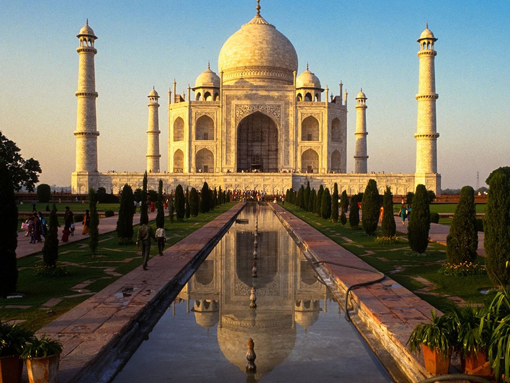

El Taj Mahal es un monumento funerario construido entre 1632 y 1654 en la ciudad de Agra, estado de Uttar Pradesh, a orillas del río Yamuna, por el emperador musulmán Shah Jahan de la dinastía mogol.
El Taj Mahal, ubicado en Agra, India, es un mausoleo construido entre 1631 y 1653 por el emperador mogol Shah Jahan en memoria de su esposa favorita, Mumtaz Mahal, quien falleció durante el parto. Este monumento es un símbolo del amor eterno y está considerado una obra maestra de la arquitectura mogol. Combina elementos de estilos islámico, persa, otomano e indio. Su estructura principal es de mármol blanco y está decorada con intrincados relieves y piedras preciosas. El Taj Mahal también incluye una mezquita y amplios jardines. En 1983, fue declarado Patrimonio de la Humanidad por la UNESCO y es una de las Nuevas Siete Maravillas del Mundo. Hoy en día, sigue siendo un importante destino turístico y un icono de la cultura india.
La cultura alrededor del Taj Mahal refleja una mezcla de influencias islámicas, persas, indias y mogoles, evidente en su arquitectura y ornamentación. Es un símbolo de amor eterno y devoción, y representa el apogeo del arte y la arquitectura mogol en India. Las inscripciones en árabe y los diseños florales detallados reflejan la importancia del Corán y la simbología islámica. El Taj Mahal también es un lugar de peregrinación para aquellos que buscan contemplar la belleza y el patrimonio cultural indio. Además, es un símbolo de orgullo nacional y un emblema icónico de la identidad india en el mundo.
El Taj Mahal fue nombrada maravilla del mundo el 7 de julio de 2007
